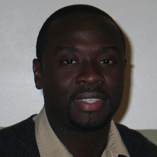

Research
My current research interests include semantic web, crowdsourcing and collective intelligence, information fusion and biomedical informatics. My research focuses on developing new semantic-based techniques for providing better information integration, search and knowledge discovery experiences for the web users. This research direction is critical for building the next generation of web, called semantic web.
The dream of the web was to create a human communication and collaboration platform for sharing knowledge and enabling a universal space for information and services. We all are now much more connected, and in turn face new resulting problems: service and information overload caused by insufficient support for information selection, organization and collaboration. The semantic web, by providing standards for formulating and distributing metadata and ontologies, enables means for information organization and selective access.
I have led or participated in development of many grant proposals on these subjects since 2001, and played a key role in making the Large Scale Distributed Information Systems (LSDIS) Lab of UGA Computer Science Department, a leading institution in the semantic web area in collaboration with my colleagues at the LSDIS Lab. My research was funded by grants from National Science Foundation (NSF), and Advanced Research and Development Activity (ARDA). In addition, I have published results of my research accomplishments in seventy peer-reviewed papers.
Research Areas
My primary research area is information systems which builds upon concepts, techniques and technologies in database, information and process management, and knowledge representation. My current research interests can be divided into following sub-areas of web information systems:
- Semantic Web and Knowledge Discovery
- Workflow Management and Web Services
- Management of Heterogeneous Data and Information Fusion
- Web-based Collective Intelligence and Crowdsourcing
- Biomedical Informatics
My past research includes the following:
- Peer-to-Peer Systems
- Object-Oriented Databases and Systems
- Transaction Processing Systems, Advanced Transaction Models and Semantic Concurrency Control
- Federated Database Systems
Research Funding & Grants
Externally Funded Research Grants
- National Science Foundation-ITR, “SemDis: Discovering Complex Relationships in Semantic Web”. PI: I. B. Arpinar, Co-PIs: J. Miller & K. Kochut. $68,947, January 1, 2007 – December 31, 2007.
- CTA Subcontract from ARDA, “An Ontological Approach to Financial Analysis and Monitoring”. PI: A. Sheth, Co-PI: I. B. Arpinar. $325,000, April 1, 2005 – September 30, 2006.
- NSF ITR-EU Collaboration, “SemGrid: Semantic Discovery on Adaptive Services Grid”. PI: A. Sheth, Other Co-PIs: I. B. Arpinar, K. Kochut, J. Miller - UGA CS & A. Joshi, T. Finin, Y. Yesha - UMBC CS. $100,000, August 1, 2005 - July 30, 2007.
- National Science Foundation-ITR, “SemDis: Discovering Complex Relationships in the Semantic Web”. PI: A. Sheth, Co-PIs: I. B. Arpinar, K. Kochut, J. Miller - UGA CS & A. Joshi, T. Finin, Y. Yesha - UMBC CS. $1,250,000 (UGA part: $597,705), October 1, 2003 – December 31, 2006.
- University Consortium for Geographic Information Science (UCGIS), “Homeland Security Workshop”. PIs: A. Sheth & L. Usery, Co-PIs: I. B. Arpinar & X. Yao, $15,000, November 2003.
- National Science Foundation-ITR (CISE-ITR-0219649), “PISTA: Semantic Association Identification and Knowledge Discovery for National Security Applications”. PI: A. Sheth, Co-PIs: I. B. Arpinar & K. Kochut. $200,000, June 1, 2002 – June 30, 2005.
- Naval Research Lab/Department of Navy, “Workflow Management for Advanced DoD Applications”. PI: A. Sheth, Co-PIs: K. Kochut & J. A. Miller, Investigator: I. B. Arpinar. $200,000, January 1, 1999 – December 31, 2000.
Internally Funded Research Grants
- UGA Faculty Research Grant, “ONTOS: Ontology-driven Web Services Integration Platform”. PI: I. B. Arpinar. $11,500, January 1, 2002 – December 31, 2002.
Refereed Journal Articles
- B. Aleman-Meza, M. Nagarajan, L. Ding, A. P. Sheth, I. B. Arpinar, A. Joshi, and T. Finin, “Scalable Semantic Analytics on Social Networks for Addressing the Problem of Conflict of Interest Detection”, ACM Transactions on the Web, Vol. 2, No. 1, February 2008, pp. 7:1 – 7:29 (Link).
- B. Aleman-Meza, F. Hakimpour, I. B. Arpinar, and A. P. Sheth, “SwetoDblp Ontology of Computer Science Publications”, Journal of Web Semantics, 5(3), September 2007, pp. 151-155 (Link).
- J. Kessler, K. Rasheed, and I. B. Arpinar, “Using Genetic Algorithms to Reorganize Superpeer Structure in Peer to Peer Networks”, Applied Intelligence, The International Journal of Artificial Intelligence, Neural Networks, and Computer Problem-Solving Techniques, Springer Science+Business Media B.V., Vol. 26, No. 1, Feb 2007, pp. 35 – 52.
- I. B. Arpinar, A. Sheth, C. Ramakrishnan, L. Usery, M. Azami, and M, Kwan, “Geospatial Ontology Development and Semantic Analytics”, Transactions in GIS, Blackwell Publishing, Vol. 10, No. 4, 2006, pp. 551 – 576.
- B. Aleman-Meza, C. Halaschek, I. B. Arpinar, C. Ramakrishnan, and A. Sheth, “Ranking Complex Relationships on the Semantic Web”, IEEE Internet Computing, Special Issue on Information Discovery: Needles and Haystacks, 9(3):37-44, May-June 2005 (Demo, Link).
- I. B. Arpinar, R. Zhang, B. Aleman-Meza, and A. Maduko, “Ontology-Driven Web Services Composition Platform”, Journal of Information Systems and e-Business Management, Special issue on Service oriented enterprise IT applications and Web Services, Vol. 3, Issue 2, July 2005, pp. 175 – 199 (Link).
- A. Sheth, B. Aleman-Meza, I. B. Arpinar, C. Bertram, Y. Warke, C. Ramakrishnan, C. Halaschek, K. Anyanwu, D. Avant, F. S. Arpinar, and K. Kochut, “Semantic Association Identification and Knowledge Discovery for National Security Applications”, Special Issue of Journal of Database Management on Database Technology for Enhancing National Security, Eds: L. Zhou and W. Kim, 16(1), Jan-Mar 2005, pp. 33 – 53 (Link).
- S. Chandrasekaran, J. Miller, G. Silver, I. B. Arpinar and A. Sheth, “Composition, Performance Analysis and Simulation of Web Services”, Electronic Markets: The International Journal of Electronic Commerce and Business Media (EM), Taylor and Francis Publishing, Vol 13, No 2 June 2003, pp. 120 – 132.
- Z. Luo, A. Sheth, K. Kochut, and I. B. Arpinar, “Exception Handling for Conflict Resolution in Cross-Organizational Workflows”, International Journal of Distributed and Parallel Databases (DAPD), Vol. 11, May 2003, pp. 271 – 306 (Link).
- K. Kochut, J. Arnold, A. Sheth, J. Miller, E. Kraemer, I. B. Arpinar, and J. Cardoso, “IntelliGEN: A Distributed Workflow System for Discovering Protein-Protein Interactions”, International Journal of Distributed and Parallel Databases (DAPD), Special issue on Bioinformatics, Volume 13, No. 1, January 2003, pp. 43 – 72 (Link).
- Z. Xu, B. Lance, C. Vargas, I. B. Arpinar, S. Bhandarkar, E. Kraemer, K. J. Kochut, J. A. Miller, J. R. Wagner, M. J. Weise, J. K. Wunderlich, J. Stringer, G. Smulian, M. T. Cushion, and J. Arnold, “Mapping by Sequencing the Pneumocystis Genome Using the Ordering DNA Sequences V3 Tool”, Genetics, Vol. 163, April 2003, pp. 1299-1313.
- A. Sheth, J. Miller, K. Kochut, I. B. Arpinar, “Research in Multi-Organizational Processes and Semantic Information Brokering at the LSDIS Lab,” SIGMOD Record, Vol. 30, No. 4, December 2001, pp. 123 – 128 (Link).
- A. P. Sheth, W. M. P. Van der Aalst, and I. B. Arpinar, “Processes Driving the Networked Economy: Process Portals, Process Vortexes, and Dynamically Trading Processes”, IEEE Concurrency Journal, July-September 1999, pp. 18 – 31 (Link).
- I. B. Arpinar, U. Halici, S. Arpinar, and A. Dogac, “Formalization of Workflows and Their Correctness Issues in the Presence of Concurrency”, International Journal of Distributed and Parallel Databases (DAPD), Vol. 7, No. 2, April 1999, pp. 199 – 248.
- A. Dogac, G. Ozhan, E. Kilic, F. Ozcan, S. Nural, S. Mancuhan, C. Dengi, P. Koksal, V. Halici, I. B. Arpinar, C. Evrendilek, and V. Sadjadi, “An Interoperability Infrastructure for Developing Multidatabase Systems:, ELEKTRIK, Turkish Journal of Electrical Engineering and Computer Sciences, Vol. 6, No. 1, 19998, pp. 1 – 10.
- A. Dogac, C. Dengi, E. Kilic, G. Ozhan, F. Ozcan, S. Nural, C. Evrendilek, U. Halici, I.B. Arpinar, P. Koksal, N. Kesim, and S. Mancuhan, “METU Interoperable Database System”, ACM SIGMOD Record, Vol. 24, No. 3, September 1995, pp. 56 – 61.
- I. B. Arpinar, A. Dogac, and C. Evrendilek, “MoodView: An Advanced Graphical User Interface for OODBMSs”, ACM SIGMOD Record, Vol. 22, No. 4, December 1993, pp. 11 – 18 (Fig 1, Fig 2, Fig 3, Fig 4).
Book Chapters
- S. Tartir, I. B. Arpinar, and A. Sheth, “Ontological Evaluation and Validation” in R. Poli, M. Hely, and A. Kameas (Editors), Theory and Applications of Ontology, 400 p., Springer, August 2010 (Link).
- M. Perry, A. Sheth, I. B. Arpinar, and F. Hakimpour, “Geospatial and Temporal Semantic Analytics”, in Handbook of Research on Geoinformatics, Editor: H. A. Karimi, Idea Group Publications, November 2008.
- B. Aleman-Mesa, S. Decker, D. Cameron, I. B. Arpinar, “Association Analytics for Network Connectivity in a Bibliographic and Expertise Dataset”, in Semantic Web Engineering in the Knowledge Society (J. Cardoso, M. D. Lytras, Eds.) Information Science Reference, Chapter VIII, 403 pages, October 2008.
- B. Aleman-Meza, A. Sheth, P. Burns, D. Paliniswami, M. Eavenson, and I. B. Arpinar, “Semantic Analytics in Intelligence: Applying Semantic Association Discovery to determine Relevance of Heterogeneous Documents”, in Advanced Topics in Database Research, Editor: Keng Siau, Idea Group Publishing, pp. 401 – 419, 2006.
- B. Aleman-Meza, C. Halaschek, and I. B. Arpinar, “Collective Knowledge Composition in a Peer-to-Peer Network: A survey for Peer-to-Peer applications”, in Encyclopedia of Database Technologies and Applications, Eds., L.C. Rivero, J.H. Doorn and V.E. Ferraggine, Idea-Group Inc, August 9, 2005, pp. 74 – 77.
- A. Sheth, I. B. Arpinar, and V. Kashyap, “Relationships at the Heart of Semantic Web: Modeling, Discovering and Exploiting Complex Semantic Relationships”, in Enhancing the Power of the Internet: Studies in Fuzziness and Soft Computing, Eds., M. Nikravesh, B. Azvin, R. Yager, and L. Zadeh, Eds., 406 pages, Springer-Verlag, 2004, pp. 63-94.
- J. Arnold, H.-B. Schuttler, D. Logan, D. Battogtokh, J. Griffith, I. B. Arpinar, S. Bhandarkar, S. Datta, K. J. Kochut, E. Kraemer, J. A. Miller, A. Sheth, G. Strobel, T. Taha, B. Aleman-Meza, J. Doss, L. Harris, & A. Nyong, “Metabolomics”, in Handbook of Industrial Mycology. Marcel Dekker, NY, NY, 2004, Chapter 22, pp. 597 – 633.
- A. Dogac, E. Gokkoca, S. Arpinar, P. Koksal, I. Cingil, I. B. Arpinar, N. Tatbul, P. Karagoz, U. Halici, and M. Altinel, “Design and Implementation of a Distributed Workflow Management System: METUFlow”, in NATO ASI, Advances in Workflow Management Systems and Interoperability, Edited by A. Dogac, L. Kalinichenko, M. T. Ozsu, and A. Sheth, Springer Verlag, 1998, pp. 61 – 91.
- A. Dogac, I. B. Arpinar, C. Evrendilek, T. Okay, and C. Ozkan, “METU Object-Oriented DBMS”, in Object-Oriented Database Systems, edited by A. Dogac, M. T. Ozsu, A. Biliris, and T. Sellis, Springer-Verlag, September 1994, pp. 327 – 354.
Refereed Conference Publications
- S. Tartir, I. B. Arpinar, and B. McKnight, “SemanticQA: Exploiting Semantic Associations for Cross-Document Question Answering”, 4th IEEE International Symposium on Innovation in Information & Communication Technology (ISIICT 2011), Amman, Jordan, November 29-December 1, 2011.
- L. Ramaswamy, and I. B. Arpinar, “Semantics-enabled Proactive and Targeted Dissemination of New Medical Knowledge”, ISCB Conference on Semantics in Healthcare & Life Sciences (CSHALS 2011), Cambridge/Boston, MA, February 23-25, 2011 (Presentation).
- D. Cameron, B. Aleman-Meza, I. B. Arpinar, S. L. Decker, and A. P. Sheth, “A Taxonomy-based Model for Expertise Extrapolation”, 2010 IEEE Fourth International Conference on Semantic Computing, Carnegie Mellon University, Pittsburgh, PA, September 22-24, 2010 (Presentation).
- B. Aleman-Meza, I. B. Arpinar, M. V. Nural, and A. P. Sheth, “Ranking Documents based on Relevance of Semantic Relationships”, 2010 IEEE Fourth International Conference on Semantic Computing, Carnegie Mellon University, Pittsburgh, PA, September 22-24, 2010 (Presentation).
- S. Tartir, I. B. Arpinar, and M. Nural, “Question Answering in Linked Data for Scientific Exploration”, Web Science Conference (WebSci10), co-located with World Wide Web Conference, Raleigh, NC, April 26-27, 2010.
- S. Yin, and I. B. Arpinar, “An Ontology-driven Rote Extractor For Pattern Disambiguation”, The 48th ACM Southeast Conference, Oxford, MS, April 15-17, 2010 (Presentation).
- K. Goenka, I. B. Arpinar, and M. Nural, “Mobile Web Search Personalization Using Ontological User Profile”, The 48th ACM Southeast Conference, Oxford, MS, April 15-17, 2010 (Presentation).
- S. Tartir, B. McKnight, and I. B. Arpinar, “SemanticQA: Web-based Ontology-Driven Question Answering”, 24th Annual ACM Symposium on Applied Computing (SAC), Waikiki Beach, Honolulu, Hawaii, March 8-12, 2009 (Link).
- R. Thomas, R. Sandhu, E. Bertino, I. B. Arpinar and S. Xu, “Privacy-Preserving Accountable Accuracy Management Systems”, ISIPS 2008: Interdisciplinary Studies in Information Privacy and Security, New Brunswick, NJ, May 12, 2008; LNCS 5661, pp. 115–121, Springer-Verlag Berlin Heidelberg, 2009 (Link).
- S. Tartir, and I. B. Arpinar, “Ontology Evaluation and Ranking using OntoQA”, The First IEEE International Conference on Semantic Computing, Irvine, CA, September 17-19, 2007, pp. 185-192 (Presentation).
- D. Cameron, B. Aleman-Meza, and I. B. Arpinar, “Collecting Expertise of Researchers for Finding Relevant Experts in a Peer-Review Setting”, First International ExpertFinder Workshop, Berlin, Germany, January 16, 2007, pp. 20-22 (Presentation).
- M. Lewis, D. Cameron, S. Xie, and I. B. Arpinar, “ES3N: A Semantic Approach to Data Management in Sensor Networks”, Semantic Sensor Network Workshop, Co-located with ISWC’06, Athens, GA, pp. 1-13, November 5-9, 2006 (Presentation).
- J. Hassell, B. Aleman-Meza, and I. B. Arpinar, “Ontology-Driven Automatic Entity Disambiguation in Unstructured Text”, 5th International Semantic Web Conference (ISWC’06), Athens, GA, November 5-9, 2006, pp. 44-57. Acceptance Rate 23%.
- L. Lin, and I. B. Arpinar, “Discovery of Semantic Relations between Web Services”, 2006 IEEE International Conference on Web Services (ICWS 2006), Chicago, IL, pp. 357-364, September 18-22, 2006. Acceptance Rate 18%.
- I. B. Arpinar, B. Aleman-Meza, and K. Giriloganathan, “Ontology Quality by Detection of Conflicts in Meta-Data”, 4th International EON Workshop: Evaluation of Ontologies for the Web, co-located with 15th International world Wide Web Conference, Edinburgh, Scotland, May 23-26, 2006, pp. 13 – 19.
- B. Aleman-Meza, M. Nagarajan, C. Ramakrishnan, L. Ding, P. Kolari, A. Sheth, I. B. Arpinar, A. Joshi, and T. Finin, “Semantic Analytics on Social Networks: Experiences in Addressing the Problem of Conflict of Interest Detection”, 15th International World Wide Web Conference, Edinburgh, Scotland, May 23 - May 26, 2006, ACM Press, New York, NY, pp. 407 – 416. Acceptance Rate: 11%, nominated for the best paper award.
- S. Tartir, I. B. Arpinar, M. Moore, A. Sheth, and B. Aleman-Meza, “OntoQA: Metric-Based Ontology Quality Analysis”, IEEE Workshop on Knowledge Acquisition from Distributed, Autonomous, Semantically Heterogenous Data and Knowledge Sources, Houston TX, Nov. 27, 2005, pp. 45 – 53 (Link).
- M. Perry, M. Janik, C. Ramakrishnan, C. Ibanez, I. B. Arpinar, and A. Sheth, “Peer-to-Peer Discovery of Semantic Associations”, Second International Workshop on Peer-to-Peer Knowledge Management (P2PKM), co-located with MobiQuitous 2005, San Diego, CA, July 17, 2005 (Link) (Presentation)
- L. Lin, and I. B. Arpinar, “Discovering Semantic Relations between Web Services Using Their Pre and Post-conditions”, 2005 IEEE International Conference on Services Computing (SCC 2005), Orlando, Florida, July 12-15, 2005, pp. 237 – 238 (Poster).
- B. Aleman-Meza, C. Halaschek-Wiener, S. Sahoo, A. Sheth, and I.B. Arpinar, “TRAKS: Terrorism Related Assessment Using Knowledge Similarity”, IEEE International Conference on Intelligence and Security Informatics (ISI-2005), May 2005 Atlanta, GA, pp. 621 – 622.
- C. Halaschek, B. Aleman-Meza, I. B. Arpinar, and A. Sheth, “Discovering and Ranking Semantic Associations over a Large RDF Metabase”, (Demonstration Paper) In Proceedings of 30th International Conference on Very Large Data Bases (VLDB2004), August 30 - September 03, 2004, Toronto, Canada, pp. 1317 – 1320.
- B. Aleman-Meza, A. Sheth, I. B. Arpinar, and C. Halaschek, “Semantic Web Technology Evaluation Ontology (SWETO): A test bed for evaluating tools and benchmarking applications”, Intl WWW Conference, Developers Day, New York, NY, May 2004 (Presentation).
- B. Aleman-Meza, C. Halaschek, A. Sheth, I. B. Arpinar, and G. Sannapareddy, “SWETO: Large-Scale Semantic Web Test-bed”, In Proceedings of the 16th International Conference on Software Engineering & Knowledge Engineering (SEKE2004): Workshop on Ontology in Action, Banff, Canada, June 21-24, 2004, pp. 490 – 493.
- I. B. Arpinar, B. Aleman-Meza, R. Zhang, and A. Maduko, “Ontology-Driven Web Services Composition”, In Proceedings of IEEE Conference on E-Commerce Technology (CEC 2004), San Diego, California, July 6-9, 2004, pp. 146 – 152 (Link).
- B. Aleman-Meza, C. Halaschek, B. Arpinar, and A. Sheth, “Context-Aware Semantic Association Ranking”, First International Workshop on Semantic Web and Databases, Berlin, Germany, September 2003, pp. 33 – 50 (Presentation).
- I. B. Arpinar, “Demo: Context-Aware Semantic Association Ranking”, Presented at the First International Workshop on Semantic Web and Databases, Berlin, Germany, September 7-8, 2003.
- R. Zhang, I. B. Arpinar, and B. Aleman-Meza, “Automatic Composition of Semantic Web Services”, Proceedings of the International Conference on Web Services, ICWS’03, Las Vegas, NV, June 23 – 26, 2003, pp. 38 – 41.
- M. Arumugam, A. Sheth, and I.B. Arpinar, “Towards Peer-to-Peer Semantic Web: A Distributed Environment for Sharing Semantic Knowledge on the Web”, Intl. Workshop on Real World RDF and Semantic Web Applications 2002, Hawaii, May 2002.
- I. B. Arpinar, J. Miller, and A. P. Sheth, “An Efficient Data Extraction and Storage Utility for XML Documents”, 39th ACM Southeast Conference, Athens, GA, March 2001, pp. 293 – 295.
- I. B. Arpinar, S. Arpinar (Nural), U. Halici, and A. Dogac, “Correctness of Workflows in the Presence of Concurrency”, NGITS'97, In Proc. of Third International Workshop on Next Generation Information Technologies and Systems, Neve Ilan, Israel, July 1997, pp. 1 – 10.
- U. Halici, I. B. Arpinar, and A. Dogac, “Serializability of Nested Transactions in Multidatabases”, ICDT'97, 6th International Conference on Database Theory, Springer Verlag, Delphi, Greece, January 1997, pp. 321 – 335.
- G. Ozhan, A. Dogac, E. Kilic, F. Ozcan, S. Nural, C. Dengi, U. Halici, I. B. Arpinar, P. Koksal, S. Mancuhan, and C. Evrendilek, “Making Oracle7, Sybase and Adabas D Interoperable Through CORBA: MIND Project”, In Proc. of European Oracle User Group Conference, Amsterdam, April 1996, pp. 1047 – 1058.
- A. Dogac, C. Dengi, E. Kilic, G. Ozhan, F. Ozcan, S. Nural, C. Evrendilek, U. Halici, I. B. Arpinar, P. Koksal, N. Kesim, and S. Mancuhan, “A Multidatabase System Implementation on CORBA”, In Proc. of RIDE'96, 6th Intl. Workshop on Research Issues in Data Engineering, New Orleans, February 1996, pp. 2 – 11.
- A. Dogac, G. Ozhan, E. Kilic, F. Ozcan, S. Nural, S. Mancuhan, C. Dengi, P. Koksal, U. Halici, I. B. Arpinar, C. Evrendilek, and V. Sadjadi, “An Interoperability Infrastructure for Developing Multidatabase Systems”, In Proc. of 11th Intl. Symposium on Computer and Information Sciences, Antalya, Turkey, November 1996.
- A. Dogac, U. Halici, E. Kilic, G. Ozhan, F. Ozcan, S. Nural, C. Dengi, S. Mancuhan, I. B. Arpinar, P. Koksal, and C. Evrendilek, “METU Interoperable Database System”, Demo Description, In Proc. of ACM SIGMOD Intl. Conf. on Management of Data, Montreal, June 1996, p. 552.
- A. Dogac, C. Dengi, E. Kilic, G. Ozhan, F. Ozcan, S. Nural, C. Evrendilek, U. Halici, I. B. Arpinar, P. Koksal, N. Kesim, and S. Mancuhan, “A Multidatabase System Implementation on CORBA”, Demo Description, In Proc. of OOPSLA'95, Conf. on Object-Oriented Programming Systems, Languages, and Applications, Austin, Texas, 1995.
- A. Dogac, M. Altinel, C. Ozkan, I. Durusoy, I. Altintas, and I. B. Arpinar, “Design and Implementation of An Object-Oriented DBMS Kernel”, In Proc. of 10th Intl. Symposium on Computer and Information Sciences, Izmir, Turkey, November 1995.
- A. Dogac, M. Altinel, C. Ozkan, I. Durusoy, I. Altintas, and I. B. Arpinar, “METU Object-Oriented DBMS Kernel”, In Proc. of 6th Intl. Conference on Database and Expert Systems Applications, London, September 1995, pp. 14 – 27.
- A. Dogac, I. B. Arpinar, C. Evrendilek, C. Ozkan, I. Altintas, I. Durusoy, M. Altinel, T. Okay, and Y. Saygin, “METU Object-Oriented Database System”, Demo Description, In Proc. of ACM SIGMOD Intl. Conf. on Management of Data, Minneapolis, May 1994. p. 513.
Technical Reports
- M. Song, J. Miller, and I. B. Arpinar, RepoX: An XML Repository for Workflow Designs and Specifications, Technical Report #UGA-CS-LSDIS-TR-01-012, University of Georgia, 43 pages, August 2001.
- J. Miller, M. Fan, S. Wu, I. B. Arpinar, A. P. Sheth, and K. J. Kochut, Security for the METEOR Workflow Management System, Technical Report #UGA-CS-LSDIS-TR-99-010, University of Georgia, 33 pages, June 1999.
Research Projects
Major projects, software systems or components developed or contributed that are commercialized, used for research and development internally or by other institutions:
Current Projects
- Web-scale Collective Argumentation using Semantic Web and Crowdsourcing.
- Semantic-enabled Proactive and Targeted Dissemination of New Medical Knowledge.
Past Projects
- SemanticQA: Web-based Ontology-Driven Question Answering.
- OntoQA: Ontology Quality Analysis and Ranking.
- SemGrid: Semantic Discovery on Adaptive Services Grid.
- Semantic Discovery: Discovering Complex Relationships in Semantic Web.
- METEOR-S: Semantic Web Services and Processes: Applying Semantics in Annotation, Quality of Service, Discovery, Composition, and Execution.
- An Ontological Approach to Financial Analysis and Monitoring.
- Ontological Approach to Assessing Intelligence Analyst Need-to-Know.
- PISTA: Semantic Association Identification and Knowledge Discovery for National Security Applications.
- Collective Knowledge Composition in a P2P Network.
- Ontology-driven Web Services Integration Platform.
- XML Process Repository (RepoX).
- Protein-Protein Interaction Mapping Workflow (Genetics Dept. & LSDIS Lab, UGA).
- METEOR Workflow Management System.
- TAIKS Field Artillery Tactical Data System (AYDIN Corp).
- Turkish Mobile Radar Complexes (TMRC) (AYDIN Corp).
- METU Workflow Management System (METUFlow) (SRDC, ODTU/METU).
- METU Interoperable DBMS (MIND) (SRDC, ODTU/METU).
- METU Object-Oriented Database Management System (MOOD) (SRDC, ODTU/METU).
- Design, and Implementation of a Reference Query Language to Utilize Network Information Services (TUBITAK).
Students
| Xin (Frank) Wang | in progress | ||
|---|---|---|---|
| Samir Tartir | Ontology-Driven Question Answering and Ontology Quality Evaluation
(Thesis, Talk)
Last known position: Assistant Professor, Philadelphia University, Jordan. |
2009 | |
| Boanerges Aleman-Meza | Ranking Documents based on Relevance
of Semantic Relationships (Thesis, Talk)
Last known position: Research Professor, Polytechnic University of Victoria, Mexico. |
2007 |
| Jianan (Johnny) Chu | in progress | ||
|---|---|---|---|
| Kitae Myong | in progress | ||
| Priya Wadhwa | Semantic Matchmaking and Ranking of Medical Literature (Thesis, Talk) | 2012 | |
| Asmita Rahman | Semantic Retrieval and Distribution of Relevant Medical Knowledge (Thesis, Talk) | 2011 | |
| Kapil Goenka | Mobile Web Search Personalization Using Ontological Profile (Thesis, Talk) | 2009 | |
| Sheng Yin | A Pattern-Based Annotation Approach: An Ontology-Driven Rote Extractor for Pattern Disambiguation (Thesis, Talk) | 2009 | |
| Bobby McKnight | From a Genome Database to a Semantic Knowledge
Base (Thesis, Talk)
Last known position: Centers for Disease Control and Prevention, Atlanta, GA. |
2008 | |
|  | Delroy Cameron | SEMEF: A Taxonomy-based Discovery
of Experts, Expertise and Collaboration Networks (Thesis, Talk)
Last known position: PhD Student, Wright State University, Dayton, OH. |
2007 |
| David Hooge | Extracting and Indexing of Triplet-Based Knowledge Using Natural Language Processing (Thesis, Talk) | 2007 | |
| Sheron Decker | Detection of Bursts and Emerging Trends Towards Identification of Researchers at the Early Stages of Trends (Thesis, Talk) | 2007 | |
| Joseph E. Hassell, IV | Ontology-Driven Automatic Entity Disambiguation in Unstructured Text (Thesis, Talk)
Last known position: Cerner Corporation, Kansas City, MO. |
2006 | |
| Lin Lin | Discovering Semantic Relations between Web Services using Their Pre and Post-Conditions (Thesis, Talk)
Last known position: Senior Software Engineer, Bioinquire, Athens, GA. |
2005 | |
| Jaymin Kessler | Using Genetic Algorithms to Optimize Superpeer Structure in Peer to Peer Networks (Thesis, Talk)
Last known position: Tech Team Programmer, Q-Games, Japan. |
2004 | |
| Karthikeyan Giriloganat- han | Semantic Conflict Detection in Meta-Data – A Rule Based Approach (Thesis, Talk) | 2004 | |
| Christian Halaschek-Wiener | A Flexible Approach for Ranking Complex Relationships on the Semantic Web (Thesis, Talk)
Last known position: Chief Technology Officer, Clados Management LLC, San Francisco, CA. |
2004 | |
| Ruoyan Zhang | Ontology-Driven Web Services Composition Techniques (Thesis, Talk) | 2004 | |
| Mullai Shanmuhan | Semanta: An Ontology Driven Semantic Link Analysis Framework (Thesis, Talk) | 2003 |
(c) 2023 Ismailcem Budak Arpinar